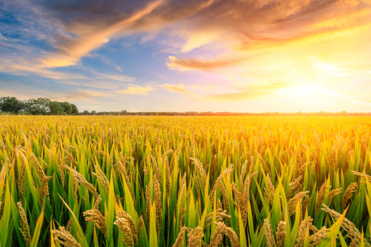

Project Info
| Problem ID: | 1637 |
|---|---|
| Problem Title: | Mobile App for Direct Market Access for Farmers |
| Background: | Farmers often face challenges in accessing markets, leading to lower income due to middlemen. This gap restricts their ability to sell produce at fair prices. |
| Description: | Create a mobile application that connects farmers directly with consumers and retailers. The app should include features for listing produce, negotiating prices, and managing transactions, thereby reducing dependence on intermediaries. |
| Expected Solution: | A user-friendly mobile platform that enables farmers to showcase their products and connect with buyers directly, enhancing their income potential. |
| Organization: | Ministry of Agriculture and Farmers Welfare |
| Department: | University of Agricultural Sciences, Dharwad (UASD), The Indian Council of Agricultural Research |
| Category: | Software |
| Theme: | Agriculture, FoodTech & Rural Development |

Process
Design System
Branding
Font
Aa